Adrien
Thursday, September 22, 2022
D-Link - DCS-932L
Sources
- Version :
1.14.04 - MD5 :
b93d60f595c4736a153ca8c61d77ffc6 - Download link http://files.dlink.com.au/products/DCS-932L/REV_A/Firmware/
This test we perfomed on Kali Linux VM.
Stage 1 - Analysis
Using binwalk we can “walk” through the firmware and check signatures inside the binary, those signatures return known Desciption and Hex address. of what’s inside the binary.
binwalk dcs932l_v1.14.04.bin
Here is the output
DECIMAL HEXADECIMAL DESCRIPTION
--------------------------------------------------------------------------------
106352 0x19F70 U-Boot version string, "U-Boot 1.1.3"
106816 0x1A140 CRC32 polynomial table, little endian
124544 0x1E680 HTML document header
124890 0x1E7DA HTML document footer
124900 0x1E7E4 HTML document header
125092 0x1E8A4 HTML document footer
125260 0x1E94C HTML document header
125953 0x1EC01 HTML document footer
327680 0x50000 uImage header, header size: 64 bytes, header CRC: 0x88345E96, created: 2016-09-09 13:52:27, image size: 3804958 bytes, Data Address: 0x80000000, Entry Point: 0x803B8000, data CRC: 0x531E94DE, OS: Linux, CPU: MIPS, image type: OS Kernel Image, compression type: lzma, image name: "Linux Kernel Image"
327744 0x50040 LZMA compressed data, properties: 0x5D, dictionary size: 33554432 bytes, uncompressed size: 6558763 bytes
Binwalk Result
106352 - 0x19F70: U-Boot 1.1.3327680 - 0x50000: Linux Kernel Image327744 - 0x50040: LZMA Compress Data
uImage Header at 327680 tell us that we can found a LInux Kerne Image in a LZMA arhcive format.
Decompress LZMA
Unpack the LZMA Archive using dd tool. We output the result inside the kernal.lzma file.
dd if=dcs932l_v1.14.04.bin skip=327744 bs=1 of=kernel.lzma
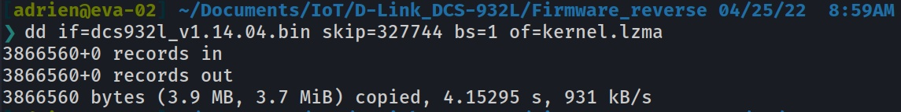
Make sure the LZMA file is well extracted
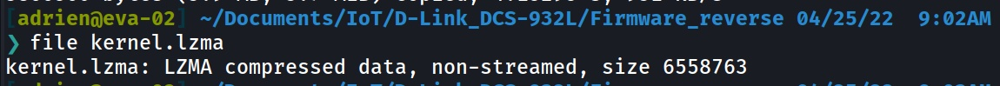
Now let’s extract the LZMA achive using unlzma tool
unlzma -d < kernel.lzma > kernel
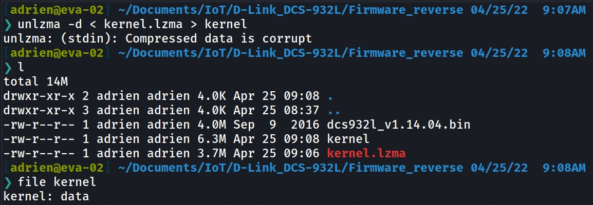
Stage 2 - Kernel
Now we have the kernel in our hands, let’s see what’s in there.
Again we use binwalk
DECIMAL HEXADECIMAL DESCRIPTION
--------------------------------------------------------------------------------
3145804 0x30004C Linux kernel version 2.6.21
3175792 0x307570 SHA256 hash constants, little endian
3183312 0x3092D0 AES Inverse S-Box
3184080 0x3095D0 AES S-Box
3389960 0x33BA08 Unix path: /usr/gnemul/irix/
3392244 0x33C2F4 Unix path: /usr/lib/libc.so.1
3393940 0x33C994 Unix path: /dev/vc/0
3408260 0x340184 Copyright string: "Copyright (c) 2010 Alpha Networks Inc."
3491536 0x3546D0 Unix path: /etc/Wireless/RT2860STA/RT2860STA.dat
3573187 0x3685C3 Neighborly text, "neighbor %.2x%.2x.%.2x:%.2x:%.2x:%.2x:%.2x:%.2x lost on port %d(%s)(%s)"
3807776 0x3A1A20 CRC32 polynomial table, little endian
3811440 0x3A2870 AES S-Box
4038656 0x3DA000 LZMA compressed data, properties: 0x5D, dictionary size: 1048576 bytes, uncompressed size: 8072704 bytes
Another LZMA archive is visible at 4038656
Extract Unkown LZMA archive
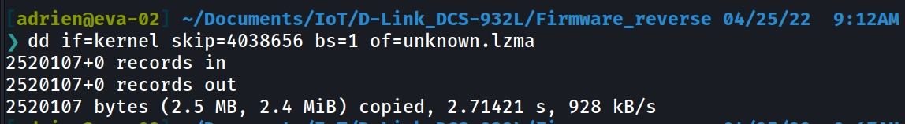
unlzma -d < unknown.lzma > unkown
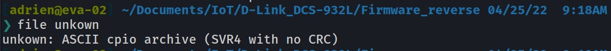
And here we go, Here is the CPIO archive thta contain the file system of the firnware.
CVEs
In the same time, the first binwalk on the kernel file give us the CVE output of the current kernel version
Linux Kernel 2.6.21 - 15 CVE
1 CVE-2012-1583 399 DoS 2012-06-16 2016-08-23 5.0 None Remote Low Not
2 CVE-2009-2406 119 DoS
3 CVE-2009-1389 119 DoS
4 CVE-2009-0778 DoS 2009-03-12 2020-08-28 7.1 None Remote Medium Not
5 CVE-2008-4609 16 DoS 2008-10-20 2021-07-07 7.1 None Remote Medium Not
6 CVE-2008-2750 20 DoS
7 CVE-2008-1669 94 Exec
8 CVE-2008-1294 20 Bypass 2008-05-02 2018-10-30 2.1 None Local Low Not
9 CVE-2008-0600 94 +Priv 2008-02-12 2018-10-30 7.2 None Local Low Not
10 CVE-2008-0352 119 DoS
11 CVE-2007-2876 DoS 2007-06-11 2018-10-30 6.1 None Local
12 CVE-2007-2453 2007-06-11 2018-10-30 1.2 None Local High Not
13 CVE-2007-2451 +Info 2007-05-29 2018-10-30 5.0 None Remote Low Not
14 CVE-2007-2172 20 2007-04-22 2018-10-19 4.7 None Local Medium Not
15 CVE-2006-6058 189 DoS
Stage 3 - Unpack CPIO
Now let’s unpack this arhive CPIO and see if we an get the file system.
sudo cpio -idm --no-absolute-filenames < ../unkown
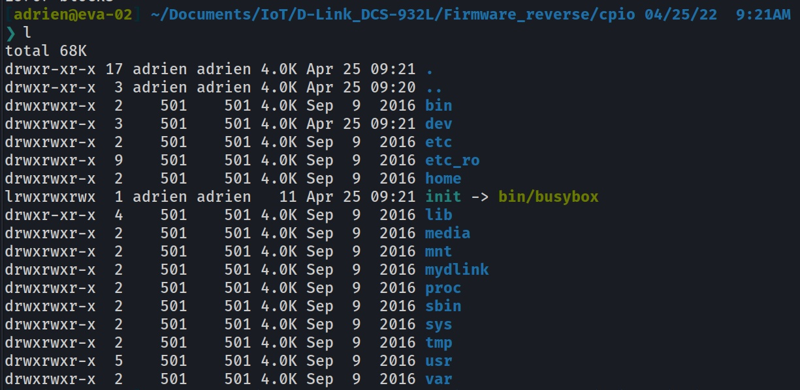
The filesystem is here we can now explore it on our own
Stage 4 - Filesystem
/etc_ro/
Inside the /etc_ro/ folder we can see custom script and a web folder application.
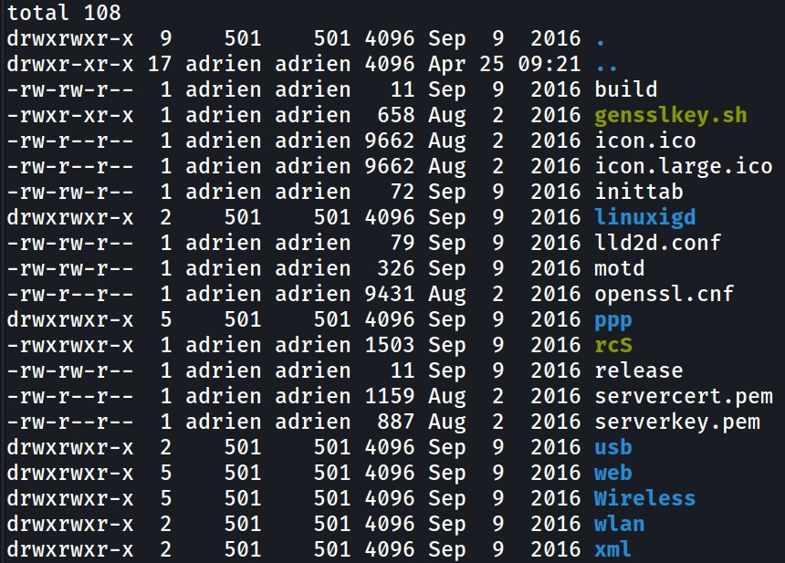
Simple Web application and private keys auto signed for the web server
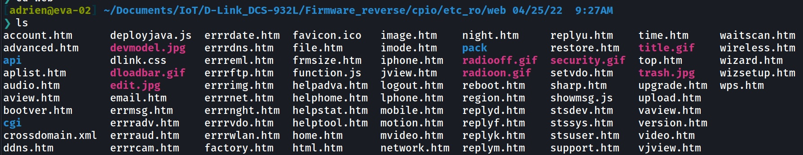
Another firmware in the WLAN folder 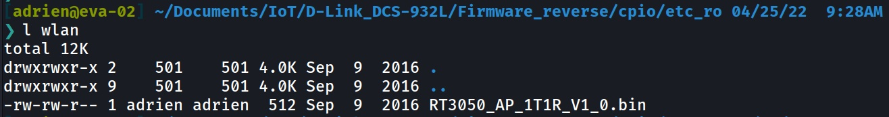
And then the private RSA key fo the web server
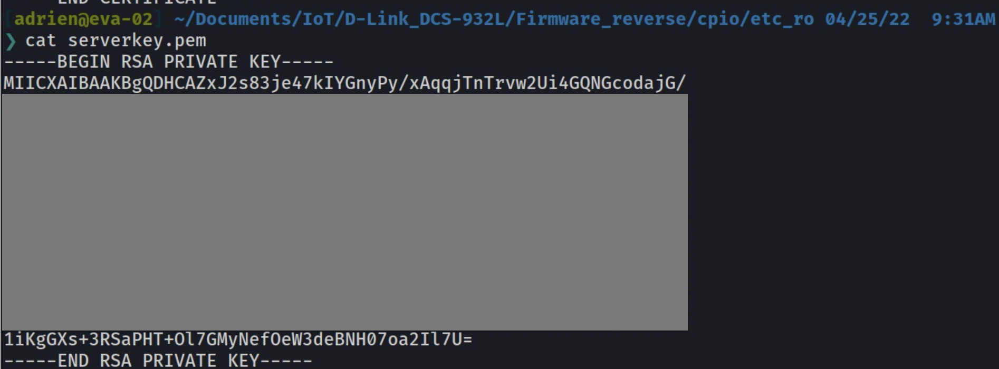
/sbin/
The sbin folder seems to be more interesting since we can check the custom scripts. 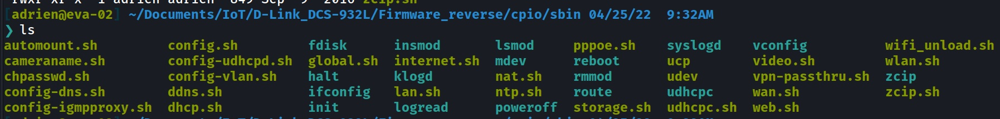
First thing I see while checking the custom scripts is that the absolute path of the binaries is not mentionned, this can be used as an exploit to bypass the real binary and use a malicious one if the $PATH variable is changed.
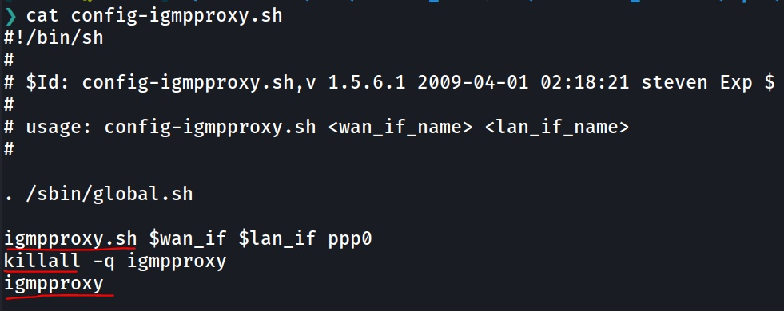
internet.sh
This script is interesting, since we can see the process of creating a new user on the system which is added directly to the /ect/passwd.
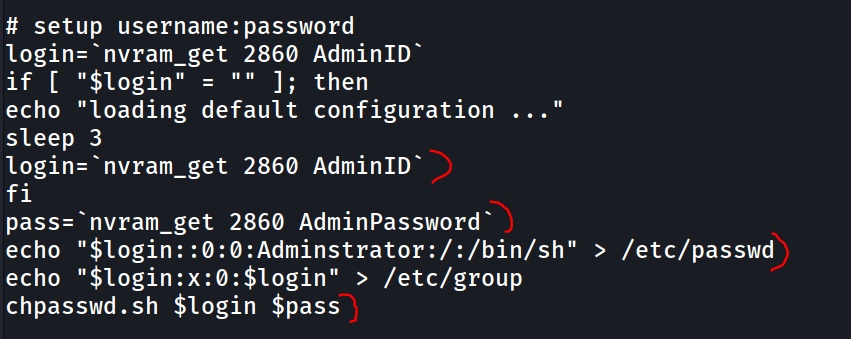
Here is some source code for the nvram_get(click-me) function, from wificonf package.
This function seems to retreive a value from a device
nvram_get [dev] <key>
The value 2880 seems to be a default value for the first card
# else, try default mapping with l1profile:
# 2880 -> 1st card
# rtdev -> 2nd card
# wifi3 -> 3rd card
storage.sh
From this script we can see a nasty chmod 777 on the home directory of the current user or the ser created.
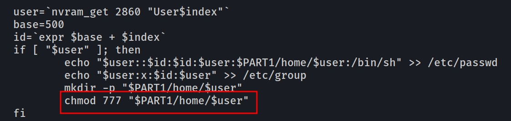
Here is the github that contains all the scripts files : github-scripts